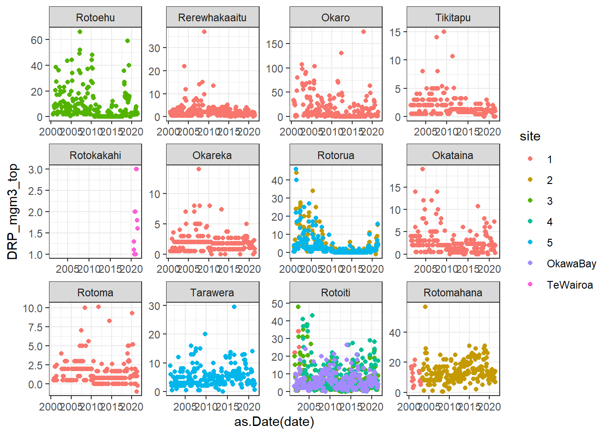
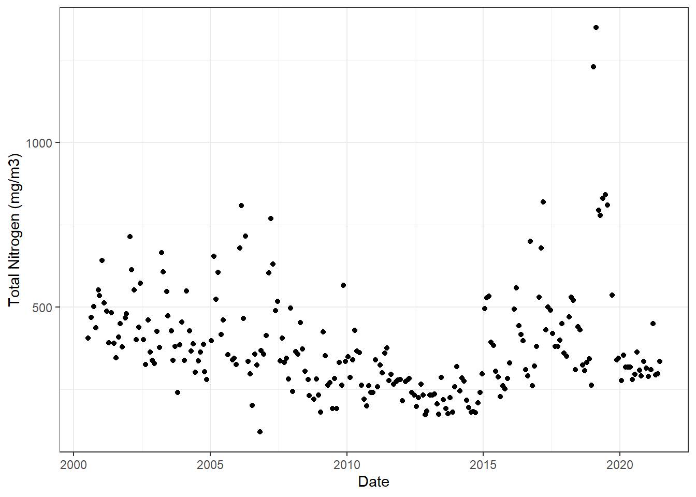

This introductory lesson is designed to teach you the fundamentals of using RStudio to analyze environmental data. First we will learn how to install packages.
1.1 Installing packages
Packages provide new functions that can help us do specific actions in R. These will become increasingly useful as you learn more about R!
The main packages that we will use in this tutorial are:
tidyverse
readxl
Before attempting to install these packages, make sure your Primary CRAN Repository is set to:
“New Zealand [https] - University of Auckland”
To check this, click ‘Tools’ –> ‘Global Options’ –> ‘Packages’. Click ‘Change’ if you need to adjust this.
You can download most packages by clicking on the ‘Install’ button on the ‘packages’ tab in the lower right window pane. Then in the Install Packages popup, select ‘Repository (CRAN)’ from the ‘Install from’ drop box and type the name of the package you wish to download (e.g., dplyr).
You can also install packages directly using code.
install.packages('tidyverse') # typically, R needs things to be in quotes,
package 'tidyverse' successfully unpacked and MD5 sums checked
The downloaded binary packages are in
C:\Users\wwoelmer\AppData\Local\Temp\RtmpQ3JgVB\downloaded_packages
# either '' or "" if it is not a recognized object in the environmentinstall.packages('readxl')
package 'readxl' successfully unpacked and MD5 sums checked
The downloaded binary packages are in
C:\Users\wwoelmer\AppData\Local\Temp\RtmpQ3JgVB\downloaded_packages
Once all of these packages are installed you can load them using the ‘library’ function:
library(tidyverse)
Warning: package 'tidyverse' was built under R version 4.4.3
library(readxl)
Warning: package 'readxl' was built under R version 4.4.3
You can check if you have loaded your package by clicking on the ‘Packages’ tab, and navigate to the package name you just loaded. There should be a check next to it if it has been loaded properly. If you don’t see the package at all, that means it has not been installed.
1.2 Creating objects
One of the main ways that you will interact with R is to create and re-use objects. Let’s just creating a few objects ourselves. We did this for an in-person workshop where we counted the number of participants and instructors. However, you can change the code whatever you like! If you’re alone, maybe try changing it to the number of doorknobs and windows in your room.
num_participants <-13# insert number of people in the roomnum_instructors <-3# insert number of instructors in the roomparticipant_instructor_ratio <- num_participants/num_instructors
Voila! You’ve created new objects! You should now see the objects in the upper right of your RStudio, in the Environment window.
1.3 Read in data, understand data classes, plot data, create new column
You can read in many different file formats into R and each will use their own function (e.g., read.csv, read.table, read_excel). To read in a file, you need to tell R where the file is located, relative to your working directory. To check where R is looking for your files, we will run the following function:
getwd()
[1] "C:/Users/wwoelmer/OneDrive - The University of Waikato/Desktop/R_Workshop_Website/workshops"
Running getwd() tells you where your working directory is located. Since we are using a project, your working directory will be where you put your project on your computer. If you don’t use a project, you will need to set a working directory using setwd(). However, I DO NOT recommend setting working directories for reproducibility reasons. If someone else wanted to run my code, they won’t have a C:/Users/wwoelmer/Desktop/uni_files/ folder and will have to re-write the code to their own local directory…this causes lots of headaches. Projects are the best way to organize your files. But see other resources about this if desired: https://rpubs.com/em_/wdInR
Now let’s read in our water quality data
wq <-read.csv('./data/BoP_WQ_formatted.csv') # HINT: hit 'tab' as you're typin the directory to see a list of files in this directory
The ./ notation means: look in the working directory (that is what the period represents), then in the folder data, then look for a file called BoP_WQ_formatted.csv
Now that we’ve read in our data, it’s best practice to look at it and see if everything looks alright.
View(wq) # this opens up the dataframe to view, # you can also do this by clicking on your dataframe ('wq') in the Environment at right
1.4 Dataframe structure
Now that we’ve read in our data, let’s look at its structure.
str(wq)
'data.frame': 3673 obs. of 20 variables:
$ lake : chr "Okareka" "Okareka" "Okareka" "Okareka" ...
$ site : chr "1" "1" "1" "1" ...
$ date : chr "2000-07-11" "2000-08-23" "2000-09-28" "2000-10-25" ...
$ chla_mgm3_top : num 5.9 7.7 3.7 0.9 1.9 ...
$ DRP_mgm3_bottom : num 2 0.5 0.5 4 6 2.25 3.5 3 2.9 5.85 ...
$ DRP_mgm3_top : num 0.5 0.5 0.5 0.5 2.5 0.5 1 0.5 3.55 0.5 ...
$ NH4_mgm3_bottom : num 5 6 NA 11 8 3 15.5 7 20 31 ...
$ NH4_mgm3_top : num 6 9 3.5 2 10 ...
$ NNN_mgm3_bottom : num 1 0.5 3 0.5 63 ...
$ NNN_mgm3_top : num 0.5 1 0.5 47.5 0.5 ...
$ secchi_m : num 6.5 6.9 9.1 11.1 8.4 9.3 9.4 9.6 9.6 9.7 ...
$ TN_mgm3_bottom : num 208 184 205 198 293 ...
$ TN_mgm3_top : num 176 184 196 268 234 ...
$ TP_mg_m3_bottom : num 7 8 5 NA 6 ...
$ TP_mgm3_top : num 11 6 8.5 4 4 ...
$ turb_NTU_bottom : num 1.06 0.93 1.4 2.4 0.97 ...
$ turb_NTU_top : num 1.5 1.1 0.75 0.7 0.83 ...
$ pH_bottom : num 7.3 7.4 7.2 7.1 7.1 ...
$ pH_top : num 7.2 7.4 7.55 7.9 7.85 ...
$ chla_mgm3_bottom: num NA NA NA NA NA NA NA NA NA NA ...
Running the str function tells us the structure of each column in the dataframe. Now that we’ve looked at the structure of the wq dataframe, this shows us that the first three columns are of the character (chr) class, including wq$date But R has a specific data class for dates so we need to tell R that this is a date
wq$date <-as.Date(wq$date)
Another formal class in R is a POSIXct object, which include date and time. Because datetimes are often in UTC, we will use as.POSIXct() to specify the time zone and ensure the right date
In this case, we will create a new column called ‘datetime’ which store both date and time zone ETC/GMT+12
Now that we’ve set the date column as class date and created a new column of class POSIXct, let’s look at the structure again
str(wq)
'data.frame': 3673 obs. of 21 variables:
$ lake : chr "Okareka" "Okareka" "Okareka" "Okareka" ...
$ site : chr "1" "1" "1" "1" ...
$ date : Date, format: "2000-07-11" "2000-08-23" ...
$ chla_mgm3_top : num 5.9 7.7 3.7 0.9 1.9 ...
$ DRP_mgm3_bottom : num 2 0.5 0.5 4 6 2.25 3.5 3 2.9 5.85 ...
$ DRP_mgm3_top : num 0.5 0.5 0.5 0.5 2.5 0.5 1 0.5 3.55 0.5 ...
$ NH4_mgm3_bottom : num 5 6 NA 11 8 3 15.5 7 20 31 ...
$ NH4_mgm3_top : num 6 9 3.5 2 10 ...
$ NNN_mgm3_bottom : num 1 0.5 3 0.5 63 ...
$ NNN_mgm3_top : num 0.5 1 0.5 47.5 0.5 ...
$ secchi_m : num 6.5 6.9 9.1 11.1 8.4 9.3 9.4 9.6 9.6 9.7 ...
$ TN_mgm3_bottom : num 208 184 205 198 293 ...
$ TN_mgm3_top : num 176 184 196 268 234 ...
$ TP_mg_m3_bottom : num 7 8 5 NA 6 ...
$ TP_mgm3_top : num 11 6 8.5 4 4 ...
$ turb_NTU_bottom : num 1.06 0.93 1.4 2.4 0.97 ...
$ turb_NTU_top : num 1.5 1.1 0.75 0.7 0.83 ...
$ pH_bottom : num 7.3 7.4 7.2 7.1 7.1 ...
$ pH_top : num 7.2 7.4 7.55 7.9 7.85 ...
$ chla_mgm3_bottom: num NA NA NA NA NA NA NA NA NA NA ...
$ datetime : POSIXct, format: "2000-07-10 12:00:00" "2000-08-22 12:00:00" ...
Another data class we may want to use is ‘factor’. In wq, lake is listed as a character which means the different values have no particular order, and will appear alphabetically.
Let’s say we wanted to order them by increasing maximum depth.
Challenge 1:What is the structure of wq now that you have updated the lake column?
Click to see a solution
str(wq)
'data.frame': 3673 obs. of 21 variables:
$ lake : Factor w/ 12 levels "Rotoehu","Rerewhakaaitu",..: 6 6 6 6 6 6 6 6 6 6 ...
$ site : chr "1" "1" "1" "1" ...
$ date : Date, format: "2000-07-11" "2000-08-23" ...
$ chla_mgm3_top : num 5.9 7.7 3.7 0.9 1.9 ...
$ DRP_mgm3_bottom : num 2 0.5 0.5 4 6 2.25 3.5 3 2.9 5.85 ...
$ DRP_mgm3_top : num 0.5 0.5 0.5 0.5 2.5 0.5 1 0.5 3.55 0.5 ...
$ NH4_mgm3_bottom : num 5 6 NA 11 8 3 15.5 7 20 31 ...
$ NH4_mgm3_top : num 6 9 3.5 2 10 ...
$ NNN_mgm3_bottom : num 1 0.5 3 0.5 63 ...
$ NNN_mgm3_top : num 0.5 1 0.5 47.5 0.5 ...
$ secchi_m : num 6.5 6.9 9.1 11.1 8.4 9.3 9.4 9.6 9.6 9.7 ...
$ TN_mgm3_bottom : num 208 184 205 198 293 ...
$ TN_mgm3_top : num 176 184 196 268 234 ...
$ TP_mg_m3_bottom : num 7 8 5 NA 6 ...
$ TP_mgm3_top : num 11 6 8.5 4 4 ...
$ turb_NTU_bottom : num 1.06 0.93 1.4 2.4 0.97 ...
$ turb_NTU_top : num 1.5 1.1 0.75 0.7 0.83 ...
$ pH_bottom : num 7.3 7.4 7.2 7.1 7.1 ...
$ pH_top : num 7.2 7.4 7.55 7.9 7.85 ...
$ chla_mgm3_bottom: num NA NA NA NA NA NA NA NA NA NA ...
$ datetime : POSIXct, format: "2000-07-10 12:00:00" "2000-08-22 12:00:00" ...
# This shows that the lake column is now a factor!
1.5 Plotting data
Now let’s plot the wq data using the ggplot system. ggplot requires a dataframe (here, wq), and then the aesthetics or aes(). This tells it what to put on the x-axis and the y-axis. We have also told it to color the points based on the column site.
ggplot(wq, aes(x =as.Date(date), y = DRP_mgm3_top, color = site)) +geom_point() +# this tells R how to "map" the data: in this case, use pointsfacet_wrap(~lake, scales ='free') +# this makes a different panel for each lake, where the scale of both axes are different for each laketheme_bw() # this sets a 'theme' for how the plot looks, this is the 'black and white' setting
Warning: Removed 322 rows containing missing values or values outside the scale range
(`geom_point()`).

Challenge 2:Create a different plot with chla_mgm3_top on the y-axis.
Click to see a solution
ggplot(wq, aes(x =as.Date(date), y = chla_mgm3_top, color = site)) +geom_point() +# this tells R how to "map" the data: in this case, use pointsfacet_wrap(~lake, scales ='free') +# this makes a different panel for each lake, where the scale of both axes are different for each laketheme_bw() # this sets a 'theme' for how the plot looks, this is the 'black and white' setting
Warning: Removed 97 rows containing missing values or values outside the scale range
(`geom_point()`).
We are now going to learn to subset data. Here, let’s subset the wq dataframe to select just one lake, I’ll pick Rotoehu. Below is an example of subsetting using the base functions in R
rotoehu <- wq[wq$lake=='Rotoehu',] # the == means: look for an exact match# this uses the base R notation of subset via brackets and indexing [rows, columns]# here, we are saying take the dataframe wq# then in brackets, we subset. here, we are saying keep only the rows where # column 'lake' equals 'Rotoehu'. then we have a comma, and nothing after it,# which means keep all of the columns
A more intuitive way to subset dataframe is to use the tidyverse function filter()
rotoehu <- wq %>%# this symbol is called a pipe, you can read it as 'whereby'filter(lake=='Rotoehu') # here we say filter out every row where the lake column# equals 'Rotoehu' (remember R is sensitive to capitals)
Using our subsetted dataframe rotoehu, let’s plot the data using ggplot. We can also clean up our axis labels a bit using the functions xlab and ylab.
Warning: Removed 6 rows containing missing values or values outside the scale range
(`geom_point()`).

2.1 Writing a .csv file
Now let’s save this subsetted data as a new csv file. First, we will bring up the help documentation for the function write.csv() so we can see what information (called arguments) the function needs us to input
?write.csv # bring up the help documentation
Based on the help documentation, we can see there are lots of arguments, but most of them have defaults. The information that R needs to know includes x, which is the object we are exporting (in this case, the dataframe rotoehu), file which corresponds to the the location where we want to save the file (in this case, we will save it in the data folder and called the file rotoehu_wq.csv), and we want to set the argument row.names = FALSE so that the file isn’t written with an extra column naming the rows
write.csv(rotoehu, # this is the object we want to exportfile ='./data/rotoehu_wq.csv', # the . means go from the working directory, row.names =FALSE) # which is our project directory (check getwd() to clarify)# then we are writing inside the 'data' folder# and can call the file whatever we want, with the # .csv extension. here, I've named it 'rotoehu_wq_2000_2021.csv# the row.names should be set as FALSE# to avoid having an extra column in the csv file which lists the row number
2.2 Calculating summary statistics
Now that we’ve subset our data, let’s calculate some summary statistics and save them as a new object
mean_chl <-mean(rotoehu$chla_mgm3_top)print(mean_chl) #### hm that says NA, which means we need to remove the NA's before we take the mean
[1] NA
Hmmm that says the mean_chl is NA. Look at the rotoehu dataframe: are all the chla values NA? No…which means there must be some NA’s in there which have thrown R off. We need to remove the NA’s before we take the mean. Look at help documentation (?mean) and read about the na.rm argument. We need to add the argument na.rm, then rerun the mean calculation
Challenge 4:Use the na.rm argument within the mean function to calculate the mean chl-a in Lake Rotoehu.
Challenge 7:To wrap up this section, let’s have a big challenge where you repeat this excercise but for Lake Rotoma DRP instead. Remember that you need to 1) subset the original wq dataframe using either indexing or filter(), 2) plot the surface (top) DRP data for Lake Rotoma, 3) calculate the mean, sd, minimum, and maximum of DRP.
Click to see a solution
rotoma <- wq %>%filter(lake =="Rotoma")ggplot(rotoma, aes(x =as.Date(date), y = DRP_mgm3_top)) +geom_point() +theme_bw() +xlab("Date") +ylab("Dissolved Reactive Phosporus at surface (mg/m3)")
Warning: Removed 6 rows containing missing values or values outside the scale range
(`geom_point()`).